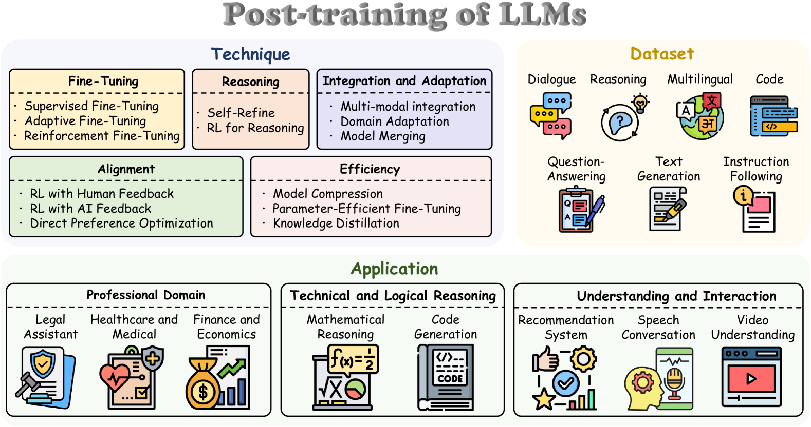

1.1 大模型训练全景¶
本节摘要
本节介绍现代大语言模型训练的三个核心阶段——预训练（Pre-Training）、中间训练（Mid-Training）和后训练（Post-Training），厘清各阶段的数据量级、训练目标与能力边界，并梳理 2025–2026 年的演进趋势。
阅读说明
本章系统梳理 LLM Post-Training 的算法技术栈：
- 1.1–1.2 节：建立大模型训练三阶段全景，统一全书数学符号与评测口径，并对比 RLHF 与 RLVR 两大后训练范式；
- 1.3–1.10 节：从离线偏好优化 DPO 与经典在线策略优化 PPO 出发，顺着 GRPO → DAPO → VAPO → CISPO → GSPO → SAPO 的演进脉络逐一剖析每个算法的设计动机、核心公式与梯度性质；
- 1.11–1.12 节：给出全部算法的公式对照速查表与演进路线图。
每当首次引入关键概念或数学变换时，正文中会先给出直观解释，并通过 「📖 初学者补充」 折叠块提供具体数值算例。
近年来，大语言模型（LLM）的工业级训练流程逐渐形成了清晰的三阶段共识。理解前两个阶段“学到了什么、没学到什么”，是理解 Post-Training 为什么必不可少的前提。

📖 读图指南：这张分类图和本书章节怎么对应？
上图来自综述 A Survey of Post-training for Large Language Models（arXiv:2503.06072），从三个维度俯瞰整个后训练生态：
- 左上 Technique（技术手段）：本书第 1 章聚焦其中的 Fine-Tuning（以 SFT 为起点）、Alignment（RLHF / RLAIF / DPO）与 Reasoning（面向长思维链推理的强化学习）；Efficiency 中的知识蒸馏（Knowledge Distillation）与 Integration 中的多模态融合、模型合并则会在第 2 章各家工业流水线（如 DeepSeek-V3.2 专家蒸馏、Kimi K1.5/K2.5）中展开。
- 右上 Dataset（数据形态）：对应本书 2.9 数据工程专题，涵盖对话、推理、多语言、代码、指令跟随等数据的合成与筛选。
- 底部 Application（下游落地）：专业领域、数学与代码推理、交互式系统，构成了驱动算法演进的真实评测场景。
核心参考文献
- A Survey of Post-training for Large Language Models (arXiv:2503.06072, 2025) — 系统覆盖后训练方法、数据与应用的综述
- A Survey on LLM Mid-Training (arXiv:2510.23081, 2025) — Mid-Training 专项综述
- The Llama 3 Herd of Models (arXiv:2407.21783, 2024) — 较早完整披露三阶段工业流水线的代表性技术报告
三阶段全景对比¶
| 阶段 | 典型数据规模 | 核心训练目标 | 算力占比 | 核心产出 |
|---|---|---|---|---|
| Pre-Training（预训练） | 万亿（Trillion）级 token | Next-Token Prediction (NTP) | 95%+ | 具备世界知识与语言规律的 Base 基座 |
| Mid-Training（中间训练） | 十亿～千亿（B～100B）级 token | 仍以 NTP 为主（退火高质语料 / 长窗口） | ~1%–4% | 具备长上下文、代码或多模态能力的增强基座 |
| Post-Training（后训练） | 万～百万级示范/偏好样本 + 大规模 RL 采样 | SFT / DPO / RLHF / RLVR | <1% → 10%+（快速上升中） | 可直接部署的 Instruct / Thinking / Agent 模型 |
Pre-Training：从海量文本中学习世界知识¶
预训练是整个流程的基石。模型在万亿级无标注文本上做 Next-Token Prediction（预测下一个词元），从中习得三层能力：
- 语言的统计与结构规律：词汇搭配、语法结构、代码语法与篇章组织；
- 世界知识：事实陈述、领域常识与事件间的关联；
- 推理的“种子”：局部演绎、模式匹配与短逻辑链——后续强化学习的核心作用之一，正是将这些散落在预训练分布中的推理种子激活、串联并放大为系统的长链推理能力。
预训练的标准损失函数为自回归负对数似然（Negative Log-Likelihood, NLL）：
📖 初学者补充：预训练损失公式里的每个符号是什么意思？
- \(\theta\)：神经网络的全部可学习参数；
- \(x = (x_1, x_2, \ldots, x_{|x|})\)：从预训练语料库 \(\mathcal{D}\) 中取出的一条 token 序列（词元序列），\(|x|\) 是序列长度；
- \(x_{<t} = (x_1, \ldots, x_{t-1})\)：第 \(t\) 个位置之前已经出现的所有上下文 token；
- \(p_\theta(x_t \mid x_{<t})\)：模型在看到前文 \(x_{<t}\) 后，经过最后一层的 Softmax 对词表打分，分配给真实下一个 token \(x_t\) 的预测概率。
直观算例：假设句子被切分为 3 个 token：["地球", "绕着", "太阳"]。在 \(t=3\) 时，模型看到 ["地球", "绕着"]，如果它给 "太阳" 预测的概率是 \(0.8\)，这一步的损失就是 \(-\log(0.8) \approx 0.223\)；如果它预测的概率只有 \(0.01\)，损失就高达 \(-\log(0.01) \approx 4.605\)。最小化 \(\mathcal{L}_{\text{PT}}(\theta)\)，就是调整参数 \(\theta\) 让模型在每个位置都尽可能给真实后继 token 赋高概率。
预训练消耗了整个生命周期 95% 以上的算力，是成本最高昂的阶段。
Mid-Training：定向能力增强¶
Mid-Training（中间训练）是近年在工业界被逐步独立出来的阶段，其核心目标是：在不破坏预训练通用知识的前提下，使用更高密度的专项语料定向补强基座模型的特定能力。
📖 概念澄清：Mid-Training 与 CPT 是什么关系？
在不同团队的报告中，Mid-Training 也常被称为 Continued Pre-Training (CPT，继续预训练)、Post Pre-Training 或 Annealing Stage（退火阶段）。综述 arXiv:2510.23081 将其统一界定为：“在通用预训练之后、后训练对齐之前，采用中等规模高质量分布数据的继续语言建模阶段”。
Mid-Training 的五类典型任务：
| 任务 | 具体做法 | 代表模型 |
|---|---|---|
| 长上下文扩展 | 调整 RoPE 基频并在长文档/仓库级数据上将窗口从 4K/8K 渐进拉长至 128K～1M+ | LLaMA 3.1 (128K), Qwen2.5-1M, GLM-5 (4K→200K) |
| 推理与代码补强 | 提高数学、科学推导、代码仓库与 PR/Issue 序列的采样权重并配合学习率退火 | DeepSeek-Coder, MiniMax-M1 (7.5T 推理语料 CPT) |
| 领域适配 | 在医学、法律、金融等高专业壁垒语料上继续训练 | 各类垂直行业基座 |
| 多语言增强 | 针对低资源或目标语种补充高纯净度平行与单语语料 | Qwen 系列多语言增强 |
| 多模态与稀疏注意力适配 | 接入视觉编码器进行图文交错预训练，或将稠密注意力适配为稀疏注意力 | LLaMA 3.2, DeepSeek-V3.2 / GLM-5 (DSA 适配) |
Mid-Training 的三个核心特征：
- 损失函数不变：仍以 Next-Token Prediction 语言建模为主目标；
- 数据规模居中：比预训练少 1–2 个数量级（十亿～千亿 token），但远大于后训练的指令数据；
- 尚不涉及行为对齐：只负责把“能力底子”打厚，不区分对话角色，也不直接优化有用性或安全性。
Post-Training：行为对齐与能力释放¶
Post-Training 是将“高知识密度的续写器”转化为“可靠助手与推理智能体”的决定性环节。它的任务可以概括为两件事：对齐人类意图与安全边界（Alignment），以及系统性释放多步推理与工具执行能力（Capability Elicitation）。
为什么经过 Mid-Training 的基座模型依然不能直接用？
| 典型缺陷 | 具体表现 | 根本原因 |
|---|---|---|
| 不遵循用户指令 | 输入一个问题，模型可能接着续写一串同类考试题而非作答 | 预训练目标是“模仿互联网文本的后继分布”，而不是“回应用户请求” |
| 缺乏安全与真实性约束 | 容易顺着提示编造事实（幻觉），或复现训练语料中的有害、偏见言论 | 预训练对语料一视同仁地最大化似然，没有“好坏对错”的负向反馈信号 |
| 长链推理与规划未激活 | 具备单步知识却在复杂问题上跳步、算错后不会回头检查 | 互联网自然语料中极少完整记录人类试错、回溯与验证的完整内部思考过程 |
Post-Training 的经典里程碑来自 OpenAI 的 InstructGPT（arXiv:2203.02155）：经过 SFT 与 RLHF 后训练的 1.3B 小模型，在人类评估员的盲测偏好上击败了参数量大 100 多倍的 175B GPT-3 基座模型。这证明了后训练在释放模型可用价值上的极高杠杆率。
在这一阶段，常见的四类核心方法（将在 1.2–1.10 节详细展开）依次是：
- SFT（Supervised Fine-Tuning，监督微调）：用高质量
<提示, 示范回答>对继续做条件语言建模，确立对话格式与基础行为模式； - RLHF（基于人类反馈的强化学习）：先用人类偏好对比数据训练奖励模型（Reward Model），再用在线强化学习（如 PPO）优化模型生成高分回答；
- DPO（直接偏好优化）：绕开独立的奖励模型与在线采样，直接在离线偏好对
(提示, 胜出回答, 落败回答)上优化策略概率比； - RLVR（基于可验证奖励的强化学习）：针对数学、代码等有客观对错标准的任务，用确定性规则或测试沙箱直接给出奖励，驱动长思维链推理涌现。
三阶段协同关系与 2025–2026 关键趋势¶
三个阶段并非割裂的单向流水线，而是紧密耦合的能力栈：Pre-Training 决定知识广度与潜力上限，Mid-Training 拓展上下文与专项底座，Post-Training 塑造推理深度与交互形态——后训练中通过强化学习探索出的高价值轨迹，还常常通过拒绝采样或蒸馏回灌给下一代训练。
当前演进的三大核心趋势：
- Mid-Training 与 Post-Training 的边界逐渐交融：例如在 Mid-Training 退火阶段提前混入思维链格式与仓库级 Agent 轨迹（如 GLM-5），而 DeepSeek-R1 的 Cold-Start SFT 则兼具格式引导与分布过渡的作用；
- Post-Training 的算力预算占比大幅跃升：随着 RLVR 与 Agentic RL 的规模化扩展，后训练已不再是“占总成本不到 1% 的收尾工序”——例如 DeepSeek 从 V3（后训练占总成本 0.18%）演进到 V3.2 时，将后训练算力投入提升至预训练成本的 10% 以上，并明确指出 RL Scaling 尚未饱和；
- “轻量 SFT + 重度在线 RL”成为主流配方：SFT 的职责收敛为提供输出格式与最小推理种子，过重的 SFT 反而会压缩策略探索空间；核心推理与工具规划能力主要由大规模在线强化学习（配合面向中小模型的强弱蒸馏）来完成。